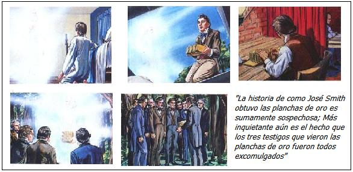
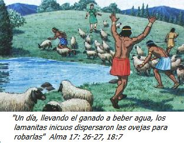

La Iglesia de Jesucristo de los Santos de los últimos Días es un grupo religioso que está creciendo aceleradamente. Según su presidente, el señor Gordon B. Hinckley, en el programa televisivo Larry King Live cada año hay 40.000 nuevos mormones, ya sea por que nacieron en una familia mormona o porque fueron convertidos a este grupo. Si se tiene en cuenta que la feligresía de esta comunidad se acerca a los diez millones el crecimiento anual es del 0,4%.
Pero, ¿Qué tiene de particular esta confesión religiosa para ser mirada con incredulidad por agnósticos y ateos? Las dos razones principales son su supuesto origen profético y la discordancia de sus libros inspirados con la historia prehispánica de América. Para explorar mejor estas dos razones es necesario revisar la historia de esta iglesia.
Historia denominacional
Este grupo religioso se originó en los Estados Unidos de Norteamérica alrededor del año de 1830. El fundador de este movimiento fue el neoyorquino José Smith (1805-1844) quien es a la vez el “profeta” de esta fe y el traductor por voluntad divina -según él- del Libro de Mormón, el cual es uno de sus libros guías junto con otros como La Biblia, Doctrinas y Convenios y la Perla de Gran Precio. En el Libro de Mormón se narra la historia de supuestos israelitas que llegaron a América desde el Viejo Mundo en tiempos prehispánicos. José Smith sostenía además, que los indígenas americanos descienden de las tribus israelitas.
En el año 1820, el señor Smith tiene su primera visión en la que se le dice que todas las religiones están en el error y por eso no debe unirse a ninguna. En este año se le presenta el ángel “Moroni” quien le habla de la historia antigua de los israelitas en América. Se le dice que el libro lo encontrará escrito en unas planchas de oro y que junto a él, encontrará dos piedras: El Urim y el Tumín, que le servirán para traducirlo. Al día siguiente el “profeta” halla las planchas de oro en un cofre de piedra en el monte Cumorah (Nueva York).
Desde 1823 hasta 1827, el profeta va al monte cada 22 de septiembre para acudir a una charla con el ángel con el fin de recibir instrucción. Es importante resaltar que existen registros legales del Estado de Nueva York que demuestran la gran afición del Sr. Smith por buscar tesoros perdidos y por adivinar la suerte, tal aspecto deja mucho que desear.
Supuestamente en 1827 recibió las planchas de oro, y entre diciembre de 1827 y febrero de 1828, José Smith tradujo algunos caracteres, claro está, recurriendo a la ayuda del Urim y el Tumín. En este mismo año se le une como secretario el señor Martín Harris, quien termina siendo despedido por mostrar una porción traducida del Libro de Mormón. En 1829, Smith nombra como nuevo secretario a Oliverio Crowdey, el cual sirve de amanuense al profeta Smith. El 15 mayo de ese año se les aparece en el bosque a Crowdey y a Smith el mismísimo Juan el Bautista. También en este año se les concede a tres testigos el privilegio de ver las planchas de oro (claro, ¡con tres testigos ya no hay posibilidad de que se trate de un fraude! ¿Verdad?)
En 1837, los mormones inician su carrera capitalista: Fundan la Sociedad Bancaria de Kirtland, la cual caería en bancarrota dos años después. En 1838, ocurre un acontecimiento, que resulta muy interesante para los críticos escépticos: Dos de los testigos especiales, Oliverio Cowdery y David Whitmer son excomulgados; el año anterior había sido excomulgado Martin Harris, por lo tanto el mormonismo se queda sin los testigos de la existencia de las planchas de oro.
Inconsistencias históricas del Libro de Mormón
El libro de Mormón también despierta la incredulidad de los racionalistas al examinar las referencias históricas que contiene. Examinaremos tres importantes razones
Poblamiento de América.
En el Libro de Mormón hay una historia sobre un supuesto segundo viaje judío a América que fue hecho en el 600 A. C. Después de llegar a América, los judíos se dividieron en dos grupos: los buenos (los nefitas) y los malos (los lamanitas). Estos últimos, los castiga Dios, volviéndoles la piel oscura por su maldad; de ahí vendrían los indígenas americanos. Sin embargo, las pruebas genéticas no dan el menor indicio de que los indígenas americanos desciendan de inmigrantes semitas. De otro lado, no hay pruebas de que hubiera una migración a América después del 600 A. C.
Al examinar los datos aportados por los arqueólogos nos damos cuenta que hay presencia humana en América desde hace 40000 años. Un descubrimiento reciente que corrobora esta hipótesis fue hecho en una cueva de Alaska, por el paleontólogo Timothy Heaton (National Geographic, diciembre de 2000). Estos descubrimientos apoyan la idea de que América estaba habitada desde la edad de hielo por gente venida desde Siberia. (Cabe resaltar que las obras evangélicas, y adventistas que confrontan el mormonismo no debaten este tema pues ellos mismos resultarían afectados, pues el creacionismo estricto (Old earth-creationism) sostiene una edad de la Tierra cercana a los 6 mil años.
Ciudades, cereales, ovejas y armas de hierro en América
En el Libro de Mormón se menciona que en la América prehispánica existían rebaños y cultivos similares a los del Viejo Mundo, además de ciudades semejantes a las del antiguo Oriente Medio.
Los paleobotánicos (estudiosos de la flora en tiempos prehistóricos) hacen perforaciones en el suelo y examinan el polen de las plantas del pasado (las especies más antiguas están más abajo y las más recientes están en las capas superiores). Es curioso notar que ningún estudio realizado ha revelado el hallazgo de polen de trigo, cebada u otras plantas cultivadas en el Viejo Mundo en tiempos prehispánicos. Los indígenas americanos no conocían la lana de las ovejas (como aparece erróneamente ilustrado en las obras mormonas) sino que confeccionaban su ropa de algodón; sólo los incas utilizaron a las llamas para proveerse de materia prima para sus prendas.
En el Libro de Mormón hay un libro llamado Alma que en su capítulo 53 menciona la reunión de 2000 jóvenes para una lucha; las armas ilustradas son espadas, escudos, lanzas, en fin, toda una dotación militar semejante a la utilizada por los pueblos del Viejo Mundo. Pero de nuevo, jamás se ha encontrado un yacimiento arqueológico que muestre que existían estos instrumentos en tiempos prehispánicos.
Cuando un escéptico examina una idea hace una predicción sobre esta y luego mira si esta predicción se cumple o no, y sobre esta base se acepta o se rechaza la hipótesis. En este caso en particular, los escépticos esperamos que si en América se desarrollaron los acontecimientos de la manera descrita por el libro de Mormón deberíamos encontrar yacimientos arqueológicos con lana, huesos de ovejas, cereales, polen de trigo, espadas de hierro, o deberían mencionarse estos objetos en las narraciones indígenas. ¿Ocurre esto? La respuesta es un rotundo no.
El Libro de Mormón (3 Nefi 8) señala la existencia de varias ciudades que fueron destruidas en el momento que Jesús murió, supuestamente en el 33 D. C. Pero como siempre con los relatos mormones, no existe rastro de ninguna ciudad arrasada en esa fecha. No creo que encontrar los restos de estas ciudades, de existir, fuesen difíciles de encontrar: ¿dónde se encontraría la mayor cantidad de población de América? La respuesta es fácil: En los mismos lugares donde hoy abunda, porque el establecimiento de poblaciones depende de la productividad de la tierra. Pero nuevamente los hallazgos de ciudades amuralladas, con habitantes con una religión y cultura similar a la judía, con lana de ovejas, espadas y escrituras en planchas de metal son inexistentes.
Lenguajes americanos de origen semita
Según las propuestas mormonas los pobladores nativos de América serían de origen semita, pero no hay la más remota relación lingüística entre cualquier idioma nativo americano y el hebreo. Otra ciencia más se pone en contra de los supuestos hechos del libro del Mormón.
¿Racismo en el libro del Mormón?
El libro de Mormón maneja una historia de simple dicotomía: Los buenos (los nefitas) y los malos (los lamanitas). Aparte de esto es curioso que se narra que como castigo a los lamanitas Dios volvió oscura la piel de estos.
Las citas del Libro de Mormón que dejan ver esta tendencia racista son: 2 Nefi 5: 21, 24 y Jacob 1:14. El texto abreviado para niños dice: “Lamán y Lemuel y su gente, fueron llamados lamanitas: Estos no trabajan: Fueron inicuos. Dios hizo que su piel fuera oscura”
En las ilustraciones que siguen a esa parte, cada vez que se refieren a los “lamanitas” aparecen dibujados indígenas americanos con aspecto de incas, mayas o aztecas.
Es importante notar que en el siglo XIX, cuando vivió José Smith, había un fuerte creencia en la inferioridad racial de negros e indios. Muchos religiosos de la época llegaron a decir que las personas de piel oscura descendían de Cam, el hijo malvado de Noé en el mito del diluvio, que avisó a sus hermanos para que vieran la desnudez de su padre embriagado. Otros religiosos del siglo XIX creían que los negros no tenían alma y por lo tanto no era necesario hacer esfuerzos para su evangelización.
La narración racista de José Smith refleja un prejuicio de la época victoriana y no una realidad histórica del pasado de América.

¿Es de origen divino el Libro de Mormón?
Un manto de duda cubre al Libro del Mormón, pues las planchas de oro, de las cuales se extrajo el mensaje, estuvieron siempre ocultas. Es sospechoso que el ángel Moroni haya prohibido dejar ver las planchas de oro a cualquier persona diferente a José Smith, pues años después permitiría que tres testigos las observaran. Si la acción de mostrar al público las planchas de oro a tres testigos tenía como objetivo presentar la evidencia sobre la que la fe mormona está fundamentada, ¿por qué no mostrarla a todo el mundo? ¿Por qué no dejarla examinar por arqueólogos para que por pruebas de datación confirmaran su antigüedad y permitir además que estudiosos de lenguas muertas vieran estas planchas? Creo que de permitirse el escrutinio de los arqueólogos las planchas de oro de José Smith rivalizarían en importancia con la piedra de Rosetta o con las tabillas de escritura cuneiforme de Mesopotamía. ¿Por qué este recelo? En mi opinión, las probabilidades de que el Libro de Mormón sea un fraude son muy altas.
Un estudio detallado revela que José Smith se valió de referencias de La Biblia y de obras de Shakespeare para escribir este libro. Este análisis fue hecho por el pastor adventista Daniel Scarone en su libro Mormonismo la historia que pocos conocen. (Curiosamente el escepticismo que aplica este pastor adventista para examinar el profeticismo de un credo que compite con el suyo por nuevos conversos no es aplicado para examinar a la profetisa de su denominación, la señora Elena G. de White.)
En el libro de Mormón, específicamente en 2 Nefí 1:14, se puede leer una frase de Shakespeare:
“¡Despertad! y surgid del polvo, y escuchad las palabras de un padre tembloroso, cuyos miembros pronto depositaréis en la fría y silenciosa fosa, de donde ningún viajero puede regresar”.
Esta frase suena muy similar a una línea de Hamlet, tercer acto, escena primera, en el pasaje donde se encuentra el conocido “ser o no ser”:
“pero ese, el pavor por algo después de la muerte, el país ignoto de cuyas fronteras ningún viajero regresa, confunde la voluntad”.
El parecido es más notable en inglés:
Awake! and arise from the dust, and hear the words of a trembling parent, whose limbs ye must soon lay down in the cold and silent grave, from whence no traveller can return; (2 Nefí 1:14)
But that the dread of something after death, / The undiscover’d country from whose bourn / No traveller returns, puzzles the will (Hamlet, Acto III, escena I)
Según los mormones, el pasaje del Libro de Mormón fue escrito entre el 588 y el 570 A.C. pero el texto en el cual se inspiró, Hamlet, fue escrito en 1564 D. C. Otra similitud notable se da entre el libro de Alma y la confesión de Westminster, la cual fue escrita en noviembre de 1646.
Una importante profecía sin cumplimiento
Este texto estaría incompleto si no hiciese referencia a una profecía que no se cumplió, la cual fue recibida, según José Smith, el 2 de abril de 1843. En ella se puede ver una creencia en la inminente venida del Señor Jesucristo. La profecía se puede leer en el libro Doctrinas y Convenios, capitulo130, versículos 12-15.
“Yo profetizo en nombre del Señor Dios, que las dificultades que causarán el derrame de mucha sangre antes de la venida del Hijo del Hombre, empezarán en la Carolina del Sur. Probablemente, surgirán a causa del problema de los esclavos. Así lo declaró una voz mientras oraba en cuanto al asunto, el 25 de diciembre de 1832. En una ocasión estaba orando muy sinceramente para saber la hora de la venida del Hijo del Hombre, cuando oí una voz repetirme lo siguiente: José, hijo mío, si vives hasta cumplir 85 años, verás la faz del Hijo del Hombre; por tanto que te baste esto, y no me molestes más sobre el asunto.”
En esta “profecía” se ve que en realidad José Smith interpreta los acontecimientos políticos de su época y de allí se desprenden predicciones en las que deposita su fe en un segundo advenimiento de Jesús. ¿Por que afirmó esto? Porque en 1843 el problema de los esclavos era el asunto político más importante en los Estados Unidos.
Aunque en la “profecía” no se menciona fecha alguna para la venida del Señor Jesucristo sí se puede deducir. Como “la voz” le dijo que si llegaba a la edad de 85 años lograría ver el rostro de Jesús, se puede hacer la inferencia. José Smith nació en el año de 1805, para el año de 1890 tendría 85 años pero 1890 vino, se fue, y nada pasó. Por otra parte, la expresión de “si vives” y “probablemente surgirán a causa del problema de los esclavos” colocadas en los labios de un dios que lo sabe todo, deja ver muchas dudas sobre su omnisciencia. ¿Acaso no sabía lo que iba a pasar?
Una reflexión final
Las religiones, de cualquier ropaje, y los místicos de la Nueva Era nos venden la idea que la fe es una virtud. Pero sostengo que ésta es un insulto a la inteligencia humana. El escepticismo es la virtud. Creo que todos los seres humanos debemos evaluar críticamente lo que se nos presenta antes de aceptarlo sin importar cuantas personas lo creen, o que tan antigua sea. En 1830 eran pocos los que creían que existieron pueblos americanos descendientes de inmigrantes semitas a los cuales Jesús visitó en persona después de su resurrección; unos años más tarde casi todo el estado de Utah los creía. Ahora, más de 10 millones de personas en todo el mundo acepta estas historias. Así pasa con las historias sagradas. Así ocurrió con el mito de la ascensión a los cielos de la virgen María, el nacimiento virginal de Jesús o las 550 historias de las reencarnaciones anteriores del Buda compiladas en el libro de Jataka.

Volver a la sección Examinando las religiones
Comentarios
Comments powered by Disqus